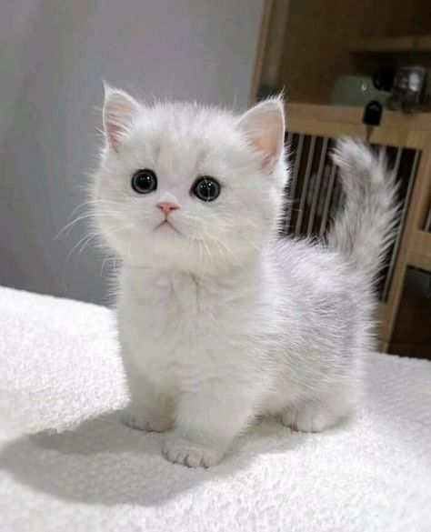
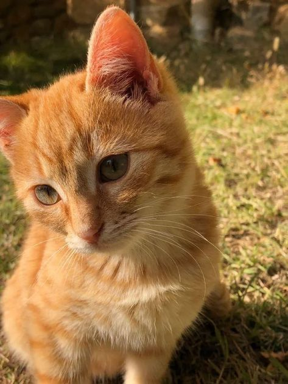
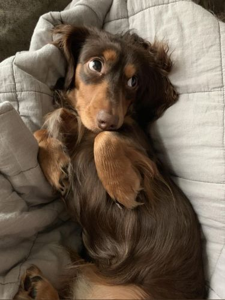

SIA 'Kopā ar mums'
Musu misija
Suņi 🐕
100
Kaķi 🐈
300
Musu mērķi
- Nodrošināt jebkuram dzīvniekam, kuram jebkādu iemeslu dēļ ilgstoši nevar atrast jaunu saimnieku, uzturēšanu to mūža garumā, izveidojot un uzturot dzīvnieku pansionātu;
- veicināt labvēlīgu attieksmi pret dzīvniekiem, neatkarīgi no to sugas, vecuma un veselības stāvokļa;
- mēs sniedzam atbalsu un norādījujumus visā adoptaciijas procesā
- Brīvprātīgā darba atvērto durvju dienu semināru turpināšana, brīvprātīgo palīgu suņu staidzināšanā semināru turpināšana, jaunu brīvprātīgā darba veicināšanas iespēju meklēšana, piesaistot dažādas sabiedrības mērķa grupas.
Atrašanas vieta
Mēs atrodamies Rīgā, Siguldā, Cēsu un bauskas novadā.Dzīvnieku patversme SIA "Kopā ar mums" apmeklētājiem atvērta katru dienu (bez brīvdienām):
- 10:00-18:00
Adoptacijas noteikumi
Dzīvnieka izvēle ir solis dzīvē un šis solis nedrīkst būt mirkļa iegriba vai spontāns lēmums!
- vēlreiz apsvērt visus plusus un mīnusus, kā arī nopietni izvērtēt savas iespējas aprūpēt no patversmes paņemto dzīvnieku – ne tikai finansiālās iespējas, bet laiks, pacietība, uzmanība, ko prasīs dzīvnieks;
- iepazīstieties ar suņa vai kaķa uzturēšanu, kā arī iepazīstieties ar pieejamo literatūru par izvēlētā dzīvnieka vajadzībām, uzturēšanu, aprūpi, ja ir iespēja, pakonsultējaties ar kādu suņa vai kaķa īpašnieku
- Sunim – trauki (ēdināšanai,dzeršanai),guļvieta, kakla siksna, uzpurnis un pavadiņa,suņu barība, rotaļlietas:
- Kaķim – trauki (ēdināšanai, dzeršanai), guļvieta, kaķa tualetes komplekts (kaste, smiltis, lāpstiņa),kaķu barība, rotaļlietas.
Musu mīluli:
|  |  |
|  |  |